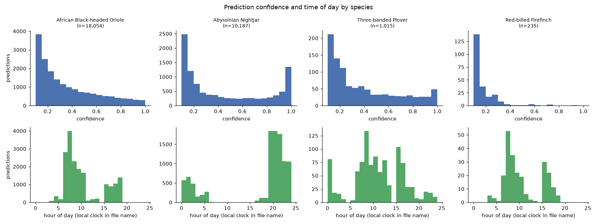
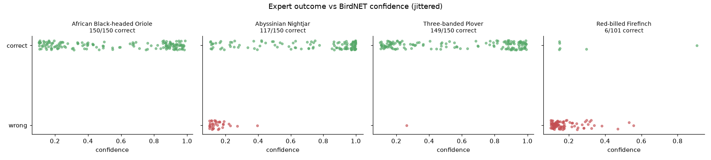
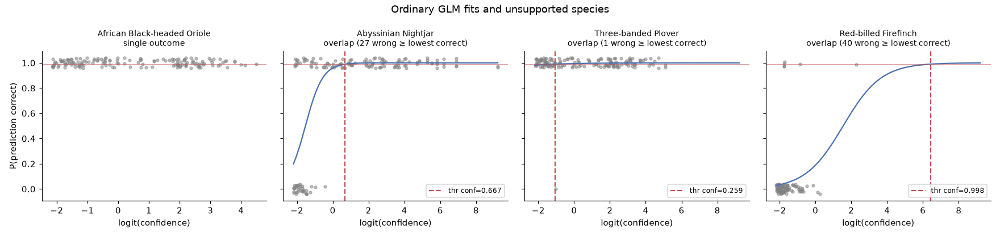
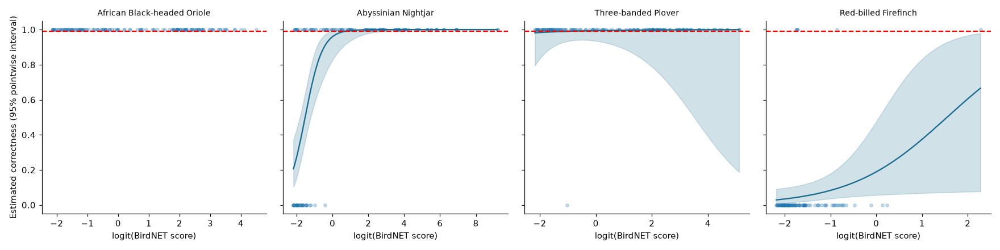
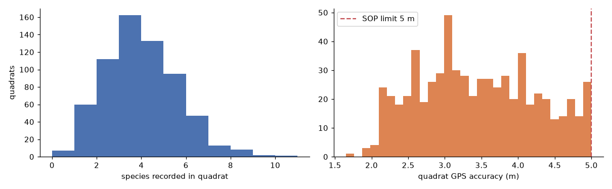
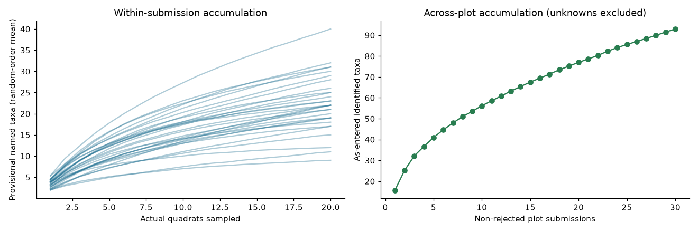
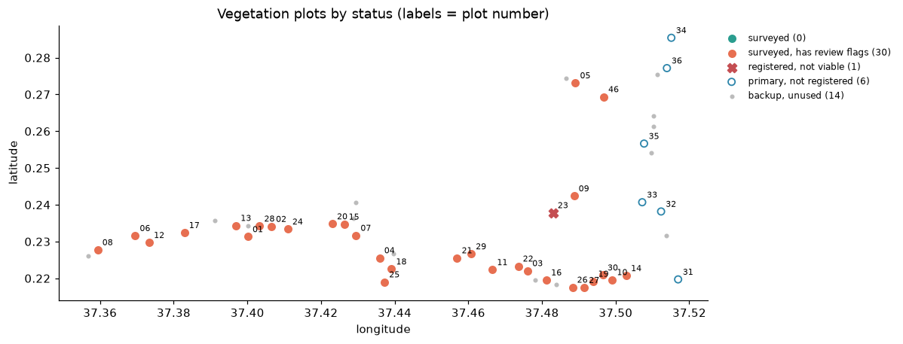

Output files
Every output, previewed and downloadable
Everything in outputs/, regenerated by notebooks 01 and 02. Previews are embedded,
so they work offline; downloads link to the real files.
Birds · labels
BirdNET predictions turned into observations- CSVbirdnet_predictions_labelled.csvAll BirdNET predictions with fitted threshold, probability correct and observation label.
- CSVbird_label_summary.csvPer species: predictions, fitted candidates, observations and rows sent for review.
- CSVbird_thresholds.csvPer-species logistic fit of correctness on confidence, and the resulting threshold.
- JSONbird_findings.jsonMachine-readable headline numbers behind the bird report.
Birds · validation & sensitivity
Evidence behind each threshold- CSVbird_validation_metrics.csvChecked-sample precision per species with Wilson 95% interval.
- CSVbird_validation_score_bins.csvValidation sample by confidence bin, with prediction counts and weights.
- CSVbird_bin_weighted_precision.csvPrecision re-weighted to the full prediction distribution, with missing-bin scenarios.
- CSVbird_checked_cutoff_evidence.csvPrecision and one-sided 95% lower bound at each candidate cutoff.
- CSVbird_raw_cutoff_diagnostic.csvChecked precision and predictions retained at raw score cutoffs.
- CSVbird_clipping_sensitivity.csvHow the score cutoff moves with the probability clipping epsilon.
- CSVbird_firth_sensitivity.csvFirth-penalised logistic fits as a check on separation.
- CSVbird_validation_link_audit.csvHow many predictions each validation row matched.
Vegetation · results
Survey, plot and effort summaries- CSVveg_survey_summary.csvSurvey-level headline counts: submissions, plots, quadrats, taxa and flag totals.
- CSVveg_plot_summary.csvOne row per submission: quadrats, provisional richness and flag counts.
- CSVveg_sampling_effort.csvSpecies accumulation per plot: expected new taxa from further quadrats and an effort verdict.
- CSVveg_observations_long.csvEvery species entry, one row per quadrat × species, with its source and analysis inclusion.
- CSVvegetation_plot_coverage.csvPlanned centroids against registered and surveyed plots, with viability and rejections.
- CSVvegetation_project_patterns.csvProject-wide patterns, with affected records, denominator and interpretation.
- JSONvegetation_findings.jsonMachine-readable headline numbers behind the vegetation report.
Vegetation · QA & audit
Flags, rules and checks against the ODK forms- CSVveg_qa_flags.csvEvery QA flag: rule, severity, affected record, field, value and message.
- CSVvegetation_rule_catalogue.csvThe QA rules with severity, basis (SOP or analyst tolerance) and rule version.
- JSONvegetation_qa_parameters.jsonTolerances used by the QA rules: quadrat count, GPS accuracy, transect length, bearing.
- CSVvegetation_integrity_checks.csvJoin and key integrity checks with the number of problem rows.
- CSVvegetation_form_calculation_audit.csvQuadrat counts stored by the ODK form compared with recomputed counts.
- CSVvegetation_species_derivation_mismatches.csvQuadrats whose species display differs from the tidy reconstruction. Empty means all match.
- CSVvegetation_form_catalogue.csvODK form fields with type, constraints, relevance and calculations.
Vegetation · transect geometry
Positions as recorded, never corrected- CSVvegetation_transect_geometry.csvRecorded transect start, midpoint and end, with length, bearing and midpoint offset.
- CSVvegetation_spatial_rollup.csvPer-submission quadrat distances from the registered line and the share flagged.
Maps
Interactive review map and spatial interchange- HTMLtransect_map.htmlInteractive transect review map. Basemap tiles need internet.
- GEOtransects.geojsonTransect lines as GeoJSON, ready for QGIS or any web map.
Figures
Static charts saved by the notebooks













No files match that filter.